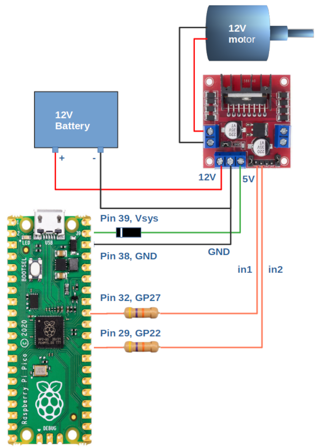

Using the Pi Pico with an L298N module to control a 12V motor

Sometimes we want to control a DC motor using a Raspberry Pi Pico. In my application, I’m controlling G-scale model railway trains, because – why not? These trains have a 45mm track gauge, and a complete train might weight kilograms, so the locomotives have fairly hefty DC motors.
Naturally, connecting a motor directly to the GPIO pins will be unhelpful – the motor might need need amps of current. We might need to control the speed of the motor, using pulse-width modulation, for example. And, as a motor can spin in two directions, we might need a way to control the direction of current flow, as well as magnitude.
This article is about controlling a 9V-12V motor, using the Pi Pico with the L298N motor driver module from HandsOn Tech. This little module is all over the Internet, and for good reasons: it’s dirt cheap – probably cheaper than the components it’s made from, in small quantities. I’ve seen them for as little as UK£12 per dozen. Each module can control two motors, supplying up to 2A to each motor in either direction, and can interface to 5V (Arduino) and 3.3V (Pi, Pico) logic levels.
In addition, the module has a built-in voltage regulator that can supply equipment aside from itself. If you’re using 12V motors, you probably have a 12V supply somewhere in whatever you’re constructing, so you might as well use it to power the Pico, too.
Note
The L298N module works with the full-size Pi, as well as Pico and Arduino, but I’m not sure it would sensible to supply even a Pi 1 from the module’s built-in voltage regulator. Please see the discussion of the voltage regulator below.
Although the module is reasonably well-documented, I’ve seen little specific to the Pico. So, in this article, I’ll give some notes about using it with the Pico, and a typical connection diagram. I’ll also point out some places where the manufacturer’s data is ambiguous, and the designer might need to be cautious.
Basic principle
The L298N is a dual H-brige. Each bridge contains four transistors, which can be switched on in pairs, to control not only whether current flows in the motor, but in which direction. Switching on one pair of transistors causes current to flow in one direction, the other pair makes it flow in the other direction. Switching both pairs of transistors on would create a short-circuit across the power supply (ouch), so the L298N has built-in logic that prevents this happening. If you try to switch both transistor pairs on, neither will switch on.
Buffer logic ensures that the transistors can be switched on using any control voltage above about 2V, and off with any control voltage below about 1V. This makes the L298N suitable for use with the Pico’s 3.3V GPIO levels.
The L298N module has six logic inputs, labeled EN A, EN B, IN1, IN2, IN3, and IN4. The two motor outputs are labeled A and B. The EN pins enable the controller bridge for a specific motor, A or B. With a microcontroller you’ll probably be using the “IN” pins for this purpose, so the EN pins are jumpered into the ‘on’ position by default.
IN1 and IN2 control motor A. When IN1 is high, current flows in one direction in the motor. When IN2 is high, current flows in the opposite direction. In the circuit diagram below, the red wire to the motor is positive with respect to the black wire when IN1 is high, and negative when IN2 is high. Setting both IN1 and IN2 high will cause no current to flow.
IN3 and IN4 perform exactly the same functions for motor B.
Voltage regulator
The capabilities of the built-in voltage regulator are, perhaps, not as well documented as they could be. The module has a jumper to enable the regulator; it’s cunningly hidden between the blocks of two and three screw terminals. If you don’t enable it, you’ll need to supply 5V from some external source.
The L298N chip needs a 5V supply, regardless of the supply voltage to the motors. When the regulator is enabled (jumper in place), then the 5V supply for the chip is derived from the supply voltage on the module’s 12V terminal, which also supplies the motors. In practice, you’ll get away with 9-12V (maybe a bit more). This configuration makes the 5V terminal a source of current which can supply other equipment, as well as the L298N itself – but this requires caution (more later).
When the jumper is removed, then you’ll need to provide an alternative supply to the 5V terminal. This configuration makes the module’s 5V terminal a current sink, rather than a source.
The module’s maximum supply voltage – and thus the maximum motor voltage – when using the built-in regulator is ambiguous. The manufacturer’s documentation refers to both “12V” and “35V”. The supply terminal on the board is labeled “12V”. The voltage regulator is just a standard 78M05 in surface-mount format. This is a linear, not switching, regulator, so the heat dissipated in the regulator will increase in proportion to the supply voltage.
The datasheet for the 78M05 says that its maximum input voltage is 35V which, I imagine, is where the “35V” figure in the module’s documentation comes from. However, I suspect that using a supply voltage that high will cause the voltage regulator to get very hot, and it has no heat-sink.
That, I think, is why the documentation says (in places) that the maximum input voltage is “12V”, even though the regulator can tolerate a higher voltage. I haven’t tried, but I imagine that the regulator would tolerate a supply voltage a little above 12V, but I wouldn’t risk this in anything critical.
All this means that if you’re using a power supply with 9-12V range, you don’t need an additional 5V supply, and you can use the built-in regulator to supply your Pico as well – within reason.
How much power will be dissipated in the regulator, when it’s powering a Pico? In the worst case, the Pico could draw 100mA, so the dissipation with a 12V supply is (12 - 5) * 0.1 = 700mW. That’s quite a lot of power in a surface-mount device with no heat-sink.
In my applications, the Pico is only drawing ~20mA, and I’m less concerned about the regulator. If in doubt, provide a separate 5V supply. Perhaps use a conventional 7805 in a package that can have a heat-sink fitted. Better, use a 12V-5V switching regulator. These are now very cheap, because they’re used to provide USB charger sockets in cars.
Application circuit
Here is a diagrammatic representation of how to connect the Pico to a 12V motor, with the whole set-up powered by a 12V battery. GPIO pins 22 and 27 (in this case) control the direction of the motor – a ‘high’ on GPIO 27 causes the motor current to be in the red-to-black direction, while a high on GPIO 22 makes the current flow black-to-red, reversing the motor’s direction of spin.

The resistors are not strictly necessary, and the values are not critical. I use 47k, because I have a stack of these in my workshop. Their purpose is simply to prevent a catastrophic failure of the L298N taking out the Pico as well.
The diode, however, probably is necessary. The circuit uses the 5V output of the module to power the Pico using its Vsys input. If you don’t use the diode here, but you connect a USB cable, then there’s a risk of the USB port trying to power the module’s built-in regulator backwards, that is, to force current into its output. Whether this is dangerous, I don’t know – it just looks like a bad idea. I’m using an IN4008 for this diode because, again, I have a stack of them. The Pico doesn’t normally draw more than 100mA, and in most applications it’s probably half this much. This means that the power dissipated in the diode will be at most about 0.6 * 0.1 = 60mW.
The voltage drop of 0.6V across the diode won’t bother the Pico – it will work with a supply as low as 1.8V.
Of course, it doesn’t matter what GPIO pins are connected to the ‘in1’ and ‘in2’ inputs on the L298N module, so long as they aren’t in use for anything else.
With the circuit above, it’s safe to connect a USB cable to a computer, as well as using the power supply derived from the 12V battery – the supply from the Pico will be drawn from whichever is the greater – the 5V generated from Vsys by the internal voltage regulator, or the 5V supply from the USB port. The Pico bas built-in diodes to prevent these alternative sources of supply for interfering with one another.
As noted above, I’m not sure this simple circuit would work effectively if the Pico drew its maximum current, and a separate 5V regulator would be better.
PWM control
The L298N is compatible with PWM (pulse width modulation) control. You can supply pulses of varying duty cycle to IN1-IN4, to control the speed of the motor, as well as its direction. The kinds of transistor used in the L298N dissipate an amount of heat that increases with the switching frequency. The Pico’s built-in PWM controller will operate up to hundreds of kilohertz, but that might not be advisable here.
In any case, most small-to-medium DC motors work best with PWM frequencies of tens of kilohertz. If the frequency is too low, you’ll maybe hear an audible whine, depending on the size and inertia of the motor.
I’m not going to explain how to use PWM control in the Pico in this article, but I might do so in a later one. For the record, I’ve found PWM frequencies in the general region of 20kHz to be effective, with the sort of motors I’m controlling.
Points to watch
The H-bridge configuration does not allow the motor to have a ground terminal. In practice, one or other motor terminal will be close to ground voltage, according to which direction the motor is spinning. However, neither terminal is at ground potential, and connecting either terminal to one of the supply rails could be catastrophic.
The power transistors in the L298N have a non-zero voltage drop. This means that, in practice, with a 12V supply, your motor will see at most about 11V, perhaps a bit less at high currents.
When the motor is turned fully on for an extended period, then you can expect the L298N to get hot – that, after all, is why it has a heat-sink. When using PWM control, the device will probably get hot even when the motor is running at less that full speed, because of switching losses. It’s probably best to allow for at least a little ventilation, if possible.
You can, in theory, increase the current-handling capacity for a single motor by connecting the motor A and motor B outputs in parallel, and controlling the IN1/IN3 and IN2/IN4 inputs together. However, it’s not documented how to wire the motors safely to do this, and it probably won’t help all that much, because the heat dissipation in the device is limited by the total current, not the current in a specific bridge.
The IN1 to IN4 terminals float low. It’s not absolutely necessary to pull down unused inputs, although it might be good pratice to do so.
Closing remarks
The L298N module provides a convenient and inexpensive way to control motors and similar devices using a Pico, particularly when there needs to be a way to reverse the direction of current flow. It benefits from a built-in 5V regulator, reducing component count. However, using this regulator to supply other equipment requires caution.